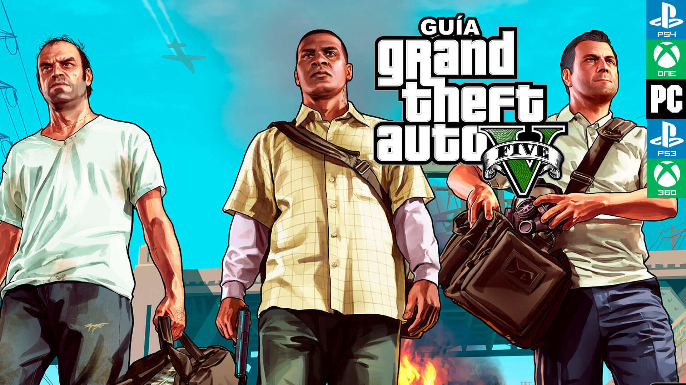

Introduccion
Grand Theft Auto V (GTA 5) es un videojuego de acción y mundo abierto desarrollado por Rockstar North y publicado por Rockstar Games. Lanzado en 2013 para Xbox 360 y PlayStation 3, posteriormente se adaptó a otras plataformas, incluyendo PC, PlayStation 4, PlayStation 5, Xbox One y Xbox Series X/S. Ambientado en la ficticia ciudad de Los Santos, el juego sigue la historia de tres protagonistas: Michael, Franklin y Trevor, cuyas vidas criminales se entrelazan en una serie de misiones llenas de acción, robos y enfrentamientos con la ley. Con un vasto mundo abierto, una jugabilidad dinámica y un exitoso modo multijugador en línea (GTA Online), GTA 5 se ha convertido en uno de los juegos más populares y vendidos de la historia.
El modo historia de Grand Theft Auto V sigue a tres criminales en la ciudad ficticia de Los Santos: Michael De Santa, un exladrón de bancos; Franklin Clinton, un joven en busca de oportunidades; y Trevor Philips, un violento excompañero de Michael. Juntos se ven envueltos en robos, traiciones y enfrentamientos con el crimen, la policía y el gobierno. La narrativa permite alternar entre los protagonistas, ofreciendo misiones de alto riesgo, persecuciones y tiroteos, en un mundo abierto lleno de actividades. El guion cinematográfico y los personajes memorables hacen de este modo historia uno de los más icónicos de la saga.
GTA Online es el modo multijugador de Grand Theft Auto V, ambientado en Los Santos y el condado de Blaine. Lanzado en 2013, permite a los jugadores crear su propio personaje y participar en actividades como misiones, atracos, carreras y negocios ilícitos, ya sea en solitario o con amigos. Con actualizaciones regulares que añaden nuevos vehículos, propiedades y expansiones, como "Golpe al Cayo Perico" y "Los Santos Tuners", el juego ofrece una experiencia en constante evolución. Con una comunidad activa, se ha convertido en uno de los modos multijugador más exitosos de la industria.